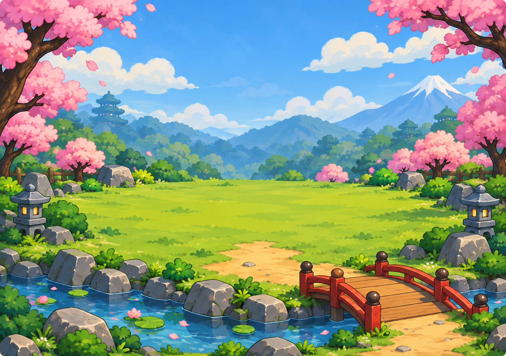

A quiet puzzle.
A growing castle.
Solve Sudoku offline. Earn XP from each new board, and watch your castle grow.
Preparing for Huawei AppGallery.

Offline play
Chapter, Practice and a Daily puzzle, ready without a game account.
Local progress
Keep your place on your device. Export a save before moving phones.
Automatic growth
Each new starting grid earns 100 XP once. Your castle grows as you solve.
A little help, when you need it.
Save and recovery guidance, puzzle controls, and a clear explanation of your data.